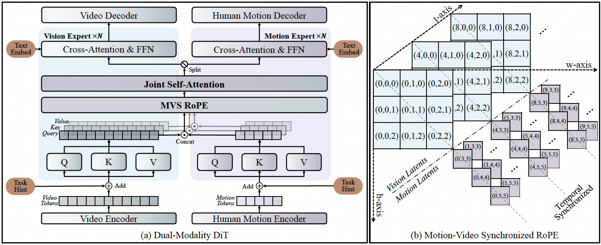
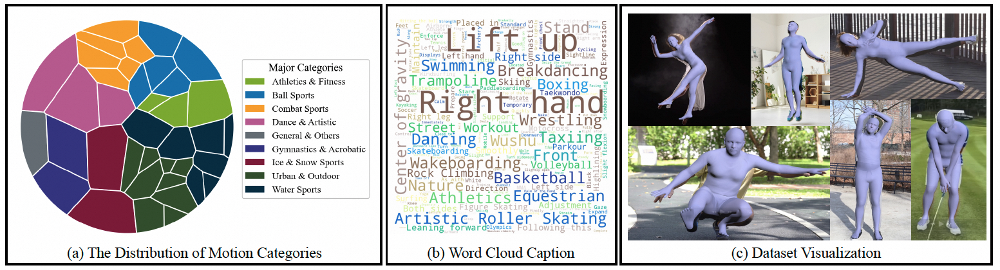
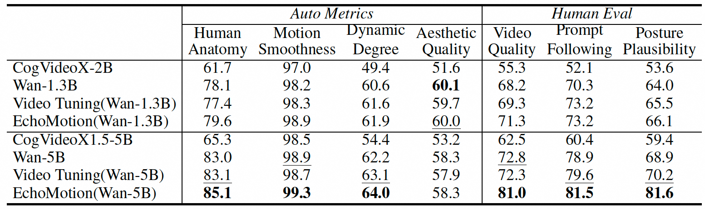

EchoMotion: Unified Human Video and Motion Generation via Dual-Modality Diffusion Transformer
Overview
Why do state-of-the-art video generation models often fail on complex human actions? While recent models excel at generating visually stunning scenes, they frequently struggle to synthesize plausible and coherent human movements. The reason lies in their training objective: by focusing solely on pixel-level fidelity, these models learn to mimic appearances but fail to grasp the underlying kinematic principles of human articulation. This leads to artifacts like floating feet and unnatural limb movements.
To overcome this, we introduce EchoMotion, a new framework that fundamentally changes the learning paradigm. Instead of treating video as just a sequence of pixels, we propose to jointly model appearance and the explicit human motion that drives it. Our core idea is that by providing the model with a clear understanding of kinematic laws, we can significantly improve the coherence and realism of generated human-centric videos. EchoMotion is designed to learn the joint distribution of what we see (appearance) and how it moves (motion).
Method
At the heart of EchoMotion is a dual-branch Diffusion Transformer (DiT) architecture that processes visual and motion information in parallel. This design allows the model to learn rich cross-modal correlations.
Our key technical contributions include:
- Dual-Stream Architecture with Motion Latents: We first encode raw SMPL motion data into a compact latent representation. These motion tokens are then concatenated with visual tokens from the video frames. Our dual-stream DiT processes this combined sequence, enabling deep fusion of appearance and kinematic information within its attention layers.
- MVS-RoPE (Motion-Video Synchronized Positional Encoding): How can the model understand that a specific motion corresponds to a specific video frame? We introduce MVS-RoPE, a novel unified 3D positional encoding scheme. It provides a shared coordinate system for both video and motion tokens, creating a powerful inductive bias that encourages temporal alignment between the two modalities. This ensures that the generated motion perfectly syncs with the visual output.
- Motion-Video Two-Stage Training Strategy: We design a flexible two-stage training strategy. In the first stage, the model learns to generate motion from text. In the second stage, it learns to generate video conditioned on both text and the pre-trained motion priors. This strategy not only enables joint generation but also unlocks versatile capabilities like motion-to-video and video-to-motion translation, all within a single unified model.
The HuMoVe Dataset
Training a model like EchoMotion requires a large-scale, high-quality dataset of paired video and motion data. To this end, we constructed HuMoVe, the first dataset of its kind, containing approximately 80,000 video-motion pairs.
Highlights:
- Wide Category Coverage: HuMoVe spans a diverse range of human activities, from daily actions and sports to complex dance performances, ensuring our model learns a robust and generalizable representation of human motion.
- High-Quality Annotations: Each video is accompanied by both a detailed textual description and a precise SMPL motion sequence, extracted using state-of-the-art motion capture techniques.
- High-Fidelity Videos: We meticulously curated high-resolution, clean video clips, free from major occlusions or distracting backgrounds, providing an ideal training ground for generation models.
Results
Text to Joint Video-and-Motion Generation
Quantitative Comparison
We first evaluate EchoMotion on generating a video and its corresponding motion sequence simultaneously from a text prompt. Compared to baseline models that only generate video, EchoMotion produces significantly more coherent and physically plausible human movements.
Visual Comparison
"The video shows a skateboarder quickly sliding down a stair railing, maintaining balance throughout, with bold and smooth movements."
"A gymnast is stretching on the mat before training, lifting her legs over her head and showing off her incredible flexibility."
Wan5B
EchoMotion(Wan5B)
Motion-to-Video Generation
Thanks to our versatile framework, EchoMotion can also generate a video conditioned on a given motion sequence (e.g., from a motion capture file). This allows for precise control over the generated character's actions.
“An Asian young man is standing in the center of a dimly lit gym, wearing a dark gray hoodie and black tight training pants, engaged in strength training. The background features neatly arranged dark metal racks, which hold dumbbells and colored solid balls—orange, deep blue, and dark green spheres are interspersed, with a clearly visible brick wall texture in the back....”
“A young South Asian male is doing physical training on a rural path at dusk. He has a lean and muscular build, short hair, and a light beard. He is wearing a dark gray sleeveless sports vest and navy blue shorts, decorated with light gray stripes at the hem. He is barefoot on the dirt path. The background features an open, fallow farmland, with dried straw scattered on the ground....”
“A young Asian woman is dressed in a dark turtleneck knit sweater and loose-fitting trousers, set in a minimalist industrial-style indoor space. The background features a textured concrete wall and a large floor-to-ceiling window. The shot is a medium shot, stable and fixed, with black-and-white tones maintaining the original high-contrast style, and the light and shadow structures remain unchanged, creating a calm yet tense overall atmosphere....”
“A deep-skinned, athletic African female athlete is in the final phase of her run-up for long jump at an outdoor track and field venue. She is on a deep red rubber track, with light yellow marker blocks visible at the edge of the track. The background features slightly blurred palm trees and shrubs, interspersed with scattered orange tropical flowers, and in the distance, there is the silhouette of low gray stands......”
“A young woman is bouncing on an indoor trampoline, with a purple wall in the background, which features two tall arched windows symmetrically placed …”
“A young Asian woman is jogging by the lakeside in the morning. Her long dark brown hair is tied in a high ponytail, and she is wearing black wireless sports headphones with a smartwatch on her wrist. She is dressed in a dark gray athletic outfit, including a short-sleeved fitted top and highwaisted quick-dry leggings, highlighting her sleek body lines. Her expression is relaxed, with a gentle smile, eyes focused ahead. The background features a serene lake in the soft morning light, with ripples of pale blue and silvery gray on the water. In the distance, the horizon is faintly visible, and the sky shows a soft pinkish-purple morning glow.”
“An East Asian boy of about ten to twelve years old is in a karate dojo, his expression focused and c omposed. He has neatly trimmed black hair and a determined gaze directed forward, showing a calm ness and perseverance beyond his age. He is wearing a clean white karate uniform with a red belt ar ound his waist, indicating an advanced level. The uniform’s fabric is stiff. The scene is set in a well-li t indoor dojo, with light oak flooring reflecting soft light. The background is slightly blurred, reveali ng purple and gray padded protective gear along the walls and a few black balance balls resting nea rby. On the right side, a wide glass window lets in morning natural light.”
Video-to-Motion Prediction
As a reverse task, EchoMotion can predict the underlying 3D motion sequence from an input video. This showcases the model's deep understanding of the relationship between appearance and kinematics.
BibTeX
@article{yang2024echomotion,
title={EchoMotion: Unified Human Video and Motion Generation via Dual-Modality Diffusion Transformer},
author={Yang, Yuxiao and Sheng, Hualian and Cai, Sijia and Lin, Jing and Wang, Jiahao and Deng, Bing and Lu, Junzhe and Wang, Haoqian and Ye, Jieping},
journal={arXiv preprint arXiv:2512.18814},
year={2024}
}